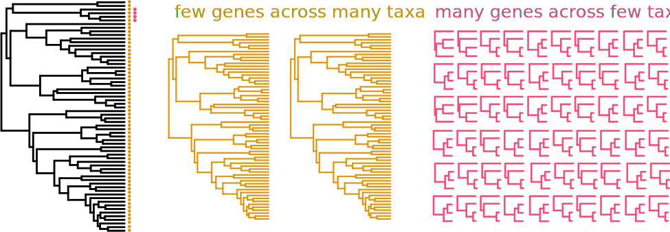
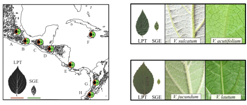

Diversity and Divergence Across Geographic
and Genomic Scales
Deren A.R. Eaton
Dept. of Ecology, Evolution, and Environmental Biology, Columbia University
How to most accurately reconstruct the
evolutionary history
of organisms from their genomes?
How genomics and evolutionary inference can
be used to reconstruct historical
ecological interactions among species?
Botanical Collections-based Research
Global research program contributing thousands of specimens to herbaria
Computational Genomics and Methods Development
Development of software tools for research and education
Diversity and Divergence and Geographic and Genomic Scales
- 1. Biodiversity research using low-cost genomic genotyping.
- 2. Methods and software development: 'recombination-aware' phylogenomics.
- 3. Reproductive and genomic diversity in a biodiversity hotspot.
Phylogenomic sampling
Decreasing costs have made it relatively easy to generate large genomic datasets

Phylogenomic sampling
Characterize whole genomes from a subset of sequenced markers.

Genealogical variation
It is important to examine evolutionary history across the entire genome.

Historical introgression/admixture
Introgression is common throughout the history of many lineages.

pyRAD and ipyrad software development
Assemble and analyze RAD-seq type data for phylogenetic datasets.
Biodiversity/Systematics Research (and many collaborations)
- Eaton & Ree (2013) SysBio ***
- Wang, Zhao, Eaton, Li & Guo (2013) Mol. Ecol. Res.
- Escudero, Eaton, Hahn & Hipp (2014) MPE
- Cavender-Bares, Gonzalez-Rodriguez, Eaton & Hipp (2015), Mol. Ecol.
- Eaton, Hipp, Gonzalez-Rodriguez, Cavender-Bares (2015), Evolution
- Eaton, Spriggs, Park & Donoghue (2017), SysBio
- Forsman, Knapp, Tisthammer, Eaton, Belcaid and Toonen (2017), MPE
- Federman, Donoghue, Daly & Eaton (2018), PLoS One
- Miller Quinzin, Edwards, Eaton, ... & Caccone (2018), Heredity
- Park, Sinnot-Armstrong, Schlutius, ... Eaton, & Donoghue (2019), Ann. Bot.
- Spriggs, Eaton, Sweeney, Schlutius, Edwards & Donoghue (2019), SysBio
- Spriggs, Schlutius, Eaton, Park, Sweeney, Edwards & Donoghue (2019), SysBio
- Paetzold, Wood, Eaton, Wagner & Appelhans (2019), Front Plant Sci.
- Satler, Herrre, Jander, Eaton, Machado, Heath & Nason (2019), Evolution.
- Bombonato, Amaral, Silva, ... Eaton, ... & Franco (2020), MPE.
- Landis, Eaton, Clement, Spriggs, Sweeney & Donoghue (2021), SysBio
- Zuluaga, van der Werff, Park, Eaton, ... & Donoghue (2021) AJB
- Guo, Ma, Yang, Ye, Guo, Liu, Eaton & Li (2021), SysBio
- Amaral, Yano, Oliveira, Brito, Bonatelli, ... Eaton & Franco (2021), J. BioGeog.
- [Donoghue, Eaton], Maya-Lastra, Landis, ... & Edwards (2022), Nat. Ecol. Evol..
- Satler, Herre, Heath, Machado, ... Eaton & Nason (2023), Ecol. & Evol.
- Stubbs, Theodoridis, Carrera, ... Eaton... & Conti (2023), New Phyt.
Biodiversity/Systematics Research (and many collaborations)
- Eaton & Ree (2013) SysBio
- Wang, Zhao, Eaton, Li & Guo (2013) Mol. Ecol. Res.
- Escudero, Eaton, Hahn & Hipp (2014) MPE
- Cavender-Bares, Gonzalez-Rodriguez, Eaton & Hipp (2015), Mol. Ecol.
- Eaton, Hipp, Gonzalez-Rodriguez, Cavender-Bares (2015), Evolution ***
- Eaton, Spriggs, Park & Donoghue (2017), SysBio
- Forsman, Knapp, Tisthammer, Eaton, Belcaid and Toonen (2017), MPE
- Federman, Donoghue, Daly & Eaton (2018), PLoS One ***
- Miller Quinzin, Edwards, Eaton, ... & Caccone (2018), Heredity
- Park, Sinnot-Armstrong, Schlutius, ... Eaton, & Donoghue (2019), Ann. Bot.
- Spriggs, Eaton, Sweeney, Schlutius, Edwards & Donoghue (2019), SysBio
- Spriggs, Schlutius, Eaton, Park, Sweeney, Edwards & Donoghue (2019), SysBio
- Paetzold, Wood, Eaton, Wagner & Appelhans (2019), Front Plant Sci.
- Satler, Herrre, Jander, Eaton, Machado, Heath & Nason (2019), Evolution.
- Bombonato, Amaral, Silva, ... Eaton, ... & Franco (2020), MPE.
- Landis, Eaton, Clement, Spriggs, Sweeney & Donoghue (2021), SysBio
- Zuluaga, van der Werff, Park, Eaton, ... & Donoghue (2021) AJB
- Guo, Ma, Yang, Ye, Guo, Liu, Eaton & Li (2021), SysBio
- Amaral, Yano, Oliveira, Brito, Bonatelli, ... Eaton & Franco (2021), J. BioGeog.
- [Donoghue, Eaton], Maya-Lastra, Landis, ... & Edwards (2022), Nat. Ecol. Evol..
- Satler, Herre, Heath, Machado, ... Eaton & Nason (2023), Ecol. & Evol.
- Stubbs, Theodoridis, Carrera, ... Eaton... & Conti (2023), New Phyt.
Biodiversity/Systematics Research (and many collaborations)
- Eaton & Ree (2013) SysBio
- Wang, Zhao, Eaton, Li & Guo (2013) Mol. Ecol. Res.
- Escudero, Eaton, Hahn & Hipp (2014) MPE
- Cavender-Bares, Gonzalez-Rodriguez, Eaton & Hipp (2015), Mol. Ecol.
- Eaton, Hipp, Gonzalez-Rodriguez, Cavender-Bares (2015), Evolution ***
- Eaton, Spriggs, Park & Donoghue (2017), SysBio
- Forsman, Knapp, Tisthammer, Eaton, Belcaid and Toonen (2017), MPE
- Federman, Donoghue, Daly & Eaton (2018), PLoS One ***
- Miller Quinzin, Edwards, Eaton, ... & Caccone (2018), Heredity
- Park, Sinnot-Armstrong, Schlutius, ... Eaton, & Donoghue (2019), Ann. Bot.
- Spriggs, Eaton, Sweeney, Schlutius, Edwards & Donoghue (2019), SysBio
- Spriggs, Schlutius, Eaton, Park, Sweeney, Edwards & Donoghue (2019), SysBio
- Paetzold, Wood, Eaton, Wagner & Appelhans (2019), Front Plant Sci.
- Satler, Herrre, Jander, Eaton, Machado, Heath & Nason (2019), Evolution.
- Bombonato, Amaral, Silva, ... Eaton, ... & Franco (2020), MPE.
- Landis, Eaton, Clement, Spriggs, Sweeney & Donoghue (2021), SysBio
- Zuluaga, van der Werff, Park, Eaton, ... & Donoghue (2021) AJB
- Guo, Ma, Yang, Ye, Guo, Liu, Eaton & Li (2021), SysBio
- Amaral, Yano, Oliveira, Brito, Bonatelli, ... Eaton & Franco (2021), J. BioGeog.
- [Donoghue, Eaton], Maya-Lastra, Landis, ... & Edwards (2022), Nat. Ecol. Evol..
- Satler, Herre, Heath, Machado, ... Eaton & Nason (2023), Ecol. & Evol.
- Stubbs, Theodoridis, Carrera, ... Eaton... & Conti (2023), New Phyt.
Biodiversity/Systematics Research (and many collaborations)
- Eaton & Ree (2013) SysBio
- Wang, Zhao, Eaton, Li & Guo (2013) Mol. Ecol. Res.
- Escudero, Eaton, Hahn & Hipp (2014) MPE
- Cavender-Bares, Gonzalez-Rodriguez, Eaton & Hipp (2015), Mol. Ecol.
- Eaton, Hipp, Gonzalez-Rodriguez, Cavender-Bares (2015), Evolution
- Eaton, Spriggs, Park & Donoghue (2017), SysBio
- Forsman, Knapp, Tisthammer, Eaton, Belcaid and Toonen (2017), MPE
- Federman, Donoghue, Daly & Eaton (2018), PLoS One ***
- Miller Quinzin, Edwards, Eaton, ... & Caccone (2018), Heredity
- Park, Sinnot-Armstrong, Schlutius, ... Eaton, & Donoghue (2019), Ann. Bot.
- Spriggs, Eaton, Sweeney, Schlutius, Edwards & Donoghue (2019), SysBio
- Spriggs, Schlutius, Eaton, Park, Sweeney, Edwards & Donoghue (2019), SysBio
- Paetzold, Wood, Eaton, Wagner & Appelhans (2019), Front Plant Sci.
- Satler, Herrre, Jander, Eaton, Machado, Heath & Nason (2019), Evolution.
- Bombonato, Amaral, Silva, ... Eaton, ... & Franco (2020), MPE.
- Landis, Eaton, Clement, Spriggs, Sweeney & Donoghue (2021), SysBio
- Zuluaga, van der Werff, Park, Eaton, ... & Donoghue (2021) AJB
- Guo, Ma, Yang, Ye, Guo, Liu, Eaton & Li (2021), SysBio
- Amaral, Yano, Oliveira, Brito, Bonatelli, ... Eaton & Franco (2021), J. BioGeog.
- [Donoghue, Eaton], Maya-Lastra, Landis, ... & Edwards (2022), Nat. Ecol. Evol..
- Satler, Herre, Heath, Machado, ... Eaton & Nason (2023), Ecol. & Evol.
- Stubbs, Theodoridis, Carrera, ... Eaton... & Conti (2023), New Phyt.
Replicated radiation of Leaf Forms in Viburnum
Field collecting (2014-2019)

Low cost genotyping for phylogenomics across phylogenetic scales
Parallel Leaf Variation (Ecotypes/species) in Isolated Cloud Forests
Parallel Leaf Variation (Ecotypes/species) in Isolated Cloud Forests
Geographic and Introgression analyses support a Replicated Radiation

RADCamp Workshop: Interactive Introduction to Genomics
- We run a 4-day (2-part) workshop to generate data and analyze it.
- RAD-seq as an introduction to genomics (wetlab and bionformatics).
- By sharing/multiplexing costs are very cheap (<$10/sample).
- COMPLETELY FREE for participants.
- Prioritize women and students from URM backgrounds.
- Funding from NSF, SSB, AGA, and SSE.

Diversity and Divergence and Geographic and Genomic Scales
- 1. Biodiversity research using low-cost genomic genotyping.
- 2. Methods and software development: 'recombination-aware' phylogenomics.
- 3. Reproductive and genomic diversity in a biodiversity hotspot.
Teaching Methods and Software Development
"Hack the Planet" course: introduces students to scientific coding skills while guiding them through the process of developing and distributing a software tool.
Mentoring Methods and Software Development
Shadie: A Python wrapper to perform SLiM simulations of plant life cycles.
Mentoring Methods and Software Development
Traversome: Hybrid PanGenome Assembler from Mixed Samples
Mentoring Methods and Software Development
superMCC: Iteratively applies BPP to calibrate node ages on large trees

Mentoring Methods and Software Development
ipcoal: integrates msprime coalescent simulations with species tree & network inference.
A Unifying Software Tool
toytree: Python-based Tree object, manipulation, visualization, and evol. analysis library.
How to most accurately reconstruct the
evolutionary history
of organisms from *whole* genomes?
Genealogical variation
Genomes are composed of a mosaic of segments inherited from different ancestors,
each separated by past recombination events.

Consequently, genealogical relationships vary spatially across genomes.
Multispecies coalescent assumptions
The multispecies coalescent (MSC) describes the expected distribution of unlinked genealogies, as a function of demographic model parameters (N$_e$, $\tau$, topology).

Multispecies coalescent assumptions
The multispecies coalescent (MSC) describes the expected distribution of unlinked genealogies, as a function of demographic model parameters (N$_e$, $\tau$, topology).
The expected distribution of linked genealogical variation is poorly characterized.
What is the expectation for the distribution of
linked genealogical variation?
How does it relate to demographic model parameters?
Why care about local genealogical variation?
- Subsampling unlinked loci effectively discards >99% genomic info.
- Ignoring linkage introduces bias (concatalescence; Gatesy 2013).
- Local ancestry is informative about selection and introgression.
Why care about local genealogical variation?

(Martin & Belleghem 2017)
Why care about local genealogical variation?
- Subsampling unlinked loci effectively discards >99% genomic info.
- Ignoring linkage introduces bias (concatalescence; Gatesy 2013).
- Local ancestry is informative about selection and introgression.
- We lack a null expectation for spatial genealogical variation.
Multispecies Sequentially Markov Coalescent
- Background: SMC' and waiting distances.
- Our new extension: MS-SMC waiting distances.
- Validation of analytical results to simulations.
- New framework for MSC model likelhoods from linked genealogies.
- Future of 'spatial-genomic' phylogenetics.
Sequentially Markov Coalescent (McVean and Cardin, 2005)
An approximation of the coalescent with recombination
Given a starting genealogy a change to the next genealogy is modeled as a Markov process — a single transition — which enables a tractable likelihood framework.
Process: recombination occurs w/ uniform probability anywhere on a tree (t$_{1}$), creating a detached subtree, which re-coalesces above t$_{1}$ with an ancestral lineage.
SMC' is widely used in HMM methods
PSMC (Li & Durbin 2011), MSMC (Schiffels & Durbin 2014), use pairwise coalescent times between sequential genealogies to infer changes in N$_e$ through time.

ARGweaver (Rasmussen et al. 2014) and ARGweaver-D (Hubisz & Siepel 2020) use an SMC'-based conditional sampling method to infer ARGs from sequence data.
Currently, we extract a fairly limited amount of
spatial information from genomes.
Categorical event outcomes under the SMC'
(a) no-change; (b-c) tree-change; and (d) topology-change.
(Deng et al. 2021)
Estimating waiting distances under the SMC'
Expected Tree and Topology Distances represent new spatial genetic information.
Estimating waiting distances under the SMC'
Expected Tree and Topology Distances represent new spatial genetic information.

Estimating waiting distances under the SMC'
Expected Tree and Topology Distances represent new spatial genetic information.

A multispecies extension to estimating waiting distances
Barriers to coalescence and variable N$_e$ among species tree intervals.

Patrick McKenzie
PhD student
Extending SMC' waiting distance estimation
Genealogy embedding table with piecewise constant coal rates in
all intervals between coal events or population intervals.
MS-SMC analytical solutions

Branch specific SMC' probabilities
Unlike single-pop models which exhibit monotonic probabilities over the length of a branch, MSC models exhibit variable rates (both $k$ and N$_e$ can change).
Exponentially distributed waiting distances
Expected number of sites until a recombination event is observed.
Exponentially distributed waiting distances

Validation:
Analytical results match expectation of stochastic coalescent simulations.
Analytical solution allows us to fit models
Calculate the likelihood of an ARG given a species tree (S)

Likelihood surface: single N$_e$
Topology-changes are more informative than tree-changes; optima at true sim. values.
Example: loci=50, length=0.1Mb, recomb=2e-9, samples-per-lineage=4.

Joint inference of multiple MSC model parameters
Metropolis Hastings MCMC converges on correct w/ increasing data.
Example: loci=50, length=0.1Mb, recomb=2e-9, samples-per-lineage=4.
Conclusions: Multispecies Sequentially Markov Coalescent
- We extended method of Deng et al. (2021) to MSC models
- New likelihood framework to fit MSC models from waiting distances!
- Enables new continuous recombination-aware phylo. inference.
- Manuscript: McKenzie & Eaton (2023) Biorxiv (In review)
- Implemented at https://github.com/eaton-lab/ipcoal/
Diversity and Divergence and Geographic and Genomic Scales
- 1. Biodiversity research using low-cost genomic genotyping.
- 2. Methods and software development: 'recombination-aware' phylogenomics.
- 3. Reproductive and genomic diversity in a biodiversity hotspot.
The Hengduan Mountains
The Hengduan Mountains
The Hengduan Mountains
The Hengduan Mountains
Floral diversity in Pedicularis


Pedicularis L. (Orobanchaceae)
- >600 species globally, >300 endemic to Hengduan Mountains.
- Spectacular floral diversity; convergent evolution (Ree 2005)
- Occur in species rich assemblages (5-12)
- High potential for reproductive conflicts
- Very rarely form hybrids
Reproductive interference
Negative fitness consequences imposed by one organism on another by disrupting successful reproduction.

Ecological pattern: reproductive interference
- We showed evidence of RI: phenotypic overdispersion in >200 assemblages.
- i.e., co-occurring species have more dissimilar flowers than expected.
- Eaton & Ree (2012) Ecology

Morphological terminology

Mechanical isolation
The beak of the galea directs pollen placement and pickup.

Elongate styles
Have evolved multiple times independently (Ree 2005) and facilitate pollen tube competition (Tong and Huang 2016).

Reproductive Interference
Transcription response in styles and pollen tubes during con- and heterospecific crosses in natural communities at RMBL in Colorado.
NSF CAREER DEB 20146813
Linking Phylogenetic Inference at Genome-wide and Genealogical Scales
NSF CAREER DEB 20146813
Linking Phylogenetic Inference at Genome-wide and Genealogical Scales
- 7 chromosome-scale genome assemblies (also for MS-SMC case study)

NSF CAREER DEB 20146813
Linking Phylogenetic Inference at Genome-wide and Genealogical Scales
- 7 chromosome-scale genome assemblies (also for MS-SMC case study)
- Massive 3RAD sequencing of species and population diversity
(117 species, >1,000 specimens).

NSF CAREER DEB 20146813
Linking Phylogenetic Inference at Genome-wide and Genealogical Scales
- 7 chromosome-scale genome assemblies (also for MS-SMC case study)
- Massive 3RAD sequencing of species and population diversity
(117 species, >1,000 specimens). - Flower and leaf transcriptomes for ~80 species representing convergent phenotypes: beak length, tube length, and color for PhyloGWAS.
NSF CAREER DEB 20146813
Linking Phylogenetic Inference at Genome-wide and Genealogical Scales
- 7 chromosome-scale genome assemblies (also for MS-SMC case study)
- Massive 3RAD sequencing of species and population diversity
(117 species, >1,000 specimens). - Flower and leaf transcriptomes for ~80 species representing convergent phenotypes: beak length, tube length, and color for PhyloGWAS.
- 3D morphometric models of flowers constructed by photogrammetry.
Diversity and Divergence and Geographic and Genomic Scales
- 1. Biodiversity research using low-cost genomic genotyping.
- 2. Methods and software development: 'spatial' phylogenomics.
- 3. Reproductive and genomic diversity in a biodiversity hotspot.
Case 1: Species Interactions and character displacement
Divergent selection is greater between populations in sympatry than allopatry (e.g., benthic/limnetic sticklebacks) to reduce competition for limited resources.
Case 1: Species Interactions and character displacement
The challenge/opportunity in Pedicularis is that there are many interacting species, and many have convergent phenotypes. We need a community model of character displacement.

Reproductive character displacement
Hypothesis: Differences among populations (within species) are a result of interspecific interactions driving character displacement in local communities.

Case study: Pedicularis cranolopha

Case study: Pedicularis cranolopha

P. cranolopha
P. longiflora
P. rhinanthoides

P. fetisowii
P. cranolopha RAD-seq genomics
- 110 individuals from 15 targeted locations.
- RAD-seq (original) PstI enzyme, ~5M reads per sample;
- ipyrad min50 assembly: 20K loci, 21% missing, 286K SNPs
Testing association between phenotype and (biotic) environment
Lande (1976):
Selection pulls
the mean phenotype towards a local optimum, while
Gene Flow homogenizes phenotypes among populations,
and they evolve by stochastic
Drift.

A community phylogenetic test for character displacement
Phenotypic model is a poor fit compared to phylogenetic nearest neighbor.

P. cranolopha tends to have a longer style when co-occurring with a close relative.
Case 2: Speciation, reinforcement, and systematics
P. cranolopha species complex is taxonomically challenging. Split into species/subspecies based on style length, pubescence, and presence of a "forked beak". But variation is relatively continuous.


Pollen transfer occurs on the right side of bumblebee pollinators
but is not highly precise, bees tend to squirm about.
In forked populations bees are restrained in the "fork", which may increase precision.
Systematics of the P. cranolopha complex
Hybrid zones: contact between populations with "forked beak" and without.